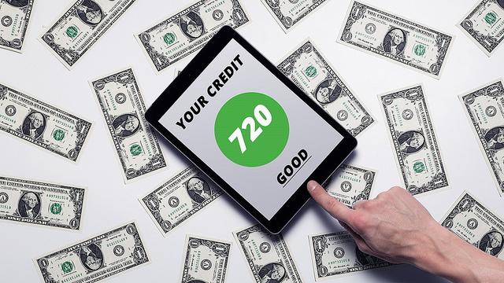

How Do You Check Your Credit Score? - Experian
 Sign In Skip to main navigation Consumer Small Business Business About Experian Consumer Support Credit Advice Global Sites Skip to main content Reports & Scores Identity Theft Protection Credit Cards & Loans Credit Support Education Sign In Free Credit Report Free Credit Score Free Credit Monitoring Free Experian Boost Experian CreditLock 3 Bureau Credit Report and Scores Compare All Products
Sign In Skip to main navigation Consumer Small Business Business About Experian Consumer Support Credit Advice Global Sites Skip to main content Reports & Scores Identity Theft Protection Credit Cards & Loans Credit Support Education Sign In Free Credit Report Free Credit Score Free Credit Monitoring Free Experian Boost Experian CreditLock 3 Bureau Credit Report and Scores Compare All Products
Instantly increase your credit scores for free.
Find out how Identity Theft Protection Free Dark Web Scan Free Child ID Scan Family ID Theft Protection View Plans & PricingIs your information on the Dark Web?
Find out for free Credit Cards Loans Credit Cards Rewards Cash Back For Bad Credit For Fair Credit Balance Transfer Secured Low Interest For Students Loans Personal Debt Consolidation StudentDiscover your personalized credit card offers with CreditMatch.
Sign up for free Disputes Fraud Alert Security Freeze Denied Credit ID Theft Victim Assistance Contact UsFind help to protect and understand your credit.
View all support Reports & Scores Improving Credit Identity Theft & Fraud Personal Finance Credit Card Reviews Loan Reviews Latest News & ResearchGet answers to your credit questions.
View all educationCategories
Credit Report & Scores Back View All Credit Report & Scores Score Advice Report Advice Back View All Report Advice Bankruptcy Charge Off Closed Accounts Collections Cosigning Credit Limit Credit Repair Delinquency Denied Credit Discharged Bankruptcy Dispute Eviction Foreclosure Inquiry Late Payment Negative Information Original Delinquency Date Paid and Settled Accounts Public Record Report Details Repossession Social Security Voluntary Surrender Improve Credit Life Stages Back View All Life Stages Establishing Credit Marriage Divorce Kids Employment Death of a Relative Joint Accounts Students Fraud & Identity Theft Back View All Fraud & Identity Theft Fraud Alert Security Freeze Prevention Data Breach Cybersecurity Credit Cards Back View All Credit Cards Best Credit Cards Credit Card Basics Credit Card Reviews APR Balance Transfers Rewards Credit Cards Student Credit Cards Loans Back View All Loans Loan Basics Loan Reviews Auto Loans Student Loans Personal Loans Insurance Finance Back View All Personal Finance Mortgage Budgeting & Saving Debt Latest News & Trends Advertiser DisclosureScore Advice
How Do You Check Your Credit Score?
4 min read 4 min readIn this article:
How to Check Your Credit Scores What Do Credit Scores Mean? What Affects My Credit Scores? Does Checking Your Credit Score Lower It?You can check your credit score from many sources, including Experian. Learning what your credit scores mean and what affects them can help you when you're getting ready to apply for new credit.
Lenders use credit scores to decide how likely it is you will repay your debts on time. There are hundreds of credit scoring models in existence, though the FICO ® Score ☉ is the most common. The higher your credit scores, the better offers you are likely to receive from lenders in the form of lower interest rates and other favorable terms.
How to Check Your Credit Scores
There are a few ways to check your credit scores:
Visit a free credit scoring website. Numerous websites offer free credit scores; just pay attention to the terms before you sign up. Some free sites offer educational scores that aim to give you an understanding of how you're doing credit-wise. You can obtain your free FICO ® Score through Experian . Check with your credit card issuer or lender. Many credit card and car loan companies offer complimentary credit scores that you can check by logging into your account online or receiving on your monthly statement. Typically, you have to opt in to receive the number. Visit a nonprofit credit counselor. Credit counselors can often pull your scores for free and go over the details with you. To find one, check with the National Foundation for Credit Counseling .What Do Credit Scores Mean?
Because there are so many credit scoring models in existence, you likely have multiple scores. If you pull your score from one site or product, it will likely be slightly different from one you find through another product.
So don't get hung up on one particular score or even the exact number. Instead, pay attention to what range you fall in . Most websites and card issuers will offer some context behind the score in addition to the number.
That information will typically include where you stand and whether your score is poor, fair, good, very good or exceptional. You will also likely find information about why your score is what it is. Your score range can help you understand how lenders view your creditworthiness and what types of credit products you're likely to be approved for.
What Affects My Credit Scores?
It's important to understand the factors that go into determining your credit scores so you know how to improve them if necessary. For the FICO ® Score, the credit score version you will receive through Experian, there are five main factors that impact your score. They are all weighted differently:
Payment history : Your payment history how regularly you pay your bills on time accounts for 35% of your FICO ® Score. Late or missed payments can negatively affect your FICO ® Score, while a pattern of making payments on time is the best way to keep it high. Amount of debt : The amount of available debt you're using, referred to as your credit utilization ratio , accounts for 30% of your score. This is calculated by dividing how much credit you're using by the total amount of credit available to you. So if you have three credit cards with a combined credit limit of $10,000, and you have a total combined balance of $3,000 on all three cards, your utilization ratio is 30%. Most experts recommend keeping your ratio below 30%, and for the best scores, below 7%. Length of credit history : How long you've used credit, including your oldest and newest accounts as well as the average age of all your open accounts accounts for 15% of your FICO ® Score. Generally, the longer you've used credit, the higher your scores. Amount of new credit : The total amount of new credit accounts for 10% of your FICO ® Score. This takes into consideration how many accounts you've opened recently and how many recent hard inquiries you have on your credit report. Too many new accounts and inquiries could indicate greater credit risk. Credit mix : The variety of types of credit you're using accounts for 10% of your FICO ® Score. If you have different kinds of credit, like credit cards and installment loans, you'll score higher than if you only have one type of credit, such as retail cards.When you receive your credit score, you should also get some guidelines on your score profile and why your score ranks where it does. This will include information on what's hurting it and what's helping your score, as in the image below:
These guidelines will help you figure out what you need to do to maintain a good FICO ® Score, and what you need to do to improve it. For example, if bad payment history is one of the reasons your FICO ® Score is on the lower side, you should focus on paying your bills on time. Consider automating your payments so you never miss them again.
How to Get Your FICO ® Score for Free
Understand the reasons that help or hurt your FICO ® Score, including your payment history, how much credit you are using, as well as other factors that influence your overall credit.
Get Your FICO ® Score
Does Checking Your Credit Score Lower It?
Checking your own credit score is considered a soft inquiry and won't affect your credit score in any way. You can check your score as often as you like and know your credit won't be affected. It's wise to check your credit score regularly, but especially when you are getting ready to apply for new credit.
In addition to checking your credit score, you should check your credit report at least once a year to make sure all the information there is correct. If you see something you strongly believe is inaccurate, you can file a dispute with the appropriate credit bureau.
Increase Your FICO ® Score Instantly for Free
Experian Boost helps by giving you credit for the utility and mobile phone bills you're already paying. Until now, those payments did not positively impact your score.
Boost Your FICO ® ScoreNo credit card required
Previous Article
Does Your Credit Score Start at Zero?
Next Article
Survey: Most Consumers Pay Back Balance Transfers During Promotional Period
How Good Is Your Credit Score?
Examples: 600 , 700 , 780 , 803 300 credit score 301 credit score 302 credit score 303 credit score 304 credit score 305 credit score 306 credit score 307 credit score 308 credit score 309 credit score 310 credit score 311 credit score 312 credit score 313 credit score 314 credit score 315 credit score 316 credit score 317 credit score 318 credit score 319 credit score 320 credit score 321 credit score 322 credit score 323 credit score 324 credit score 325 credit score 326 credit score 327 credit score 328 credit score 329 credit score 330 credit score 331 credit score 332 credit score 333 credit score 334 credit score 335 credit score 336 credit score 337 credit score 338 credit score 339 credit score 340 credit score 341 credit score 342 credit score 343 credit score 344 credit score 345 credit score 346 credit score 347 credit score 348 credit score 349 credit score 350 credit score 351 credit score 352 credit score 353 credit score 354 credit score 355 credit score 356 credit score 357 credit score 358 credit score 359 credit score 360 credit score 361 credit score 362 credit score 363 credit score 364 credit score 365 credit score 366 credit score 367 credit score 368 credit score 369 credit score 370 credit score 371 credit score 372 credit score 373 credit score 374 credit score 375 credit score 376 credit score 377 credit score 378 credit score 379 credit score 380 credit score 381 credit score 382 credit score 383 credit score 384 credit score 385 credit score 386 credit score 387 credit score 388 credit score 389 credit score 390 credit score 391 credit score 392 credit score 393 credit score 394 credit score 395 credit score 396 credit score 397 credit score 398 credit score 399 credit score 400 credit score 401 credit score 402 credit score 403 credit score 404 credit score 405 credit score 406 credit score 407 credit score 408 credit score 409 credit score 410 credit score 411 credit score 412 credit score 413 credit score 414 credit score 415 credit score 416 credit score 417 credit score 418 credit score 419 credit score 420 credit score 421 credit score 422 credit score 423 credit score 424 credit score 425 credit score 426 credit score 427 credit score 428 credit score 429 credit score 430 credit score 431 credit score 432 credit score 433 credit score 434 credit score 435 credit score 436 credit score 437 credit score 438 credit score 439 credit score 440 credit score 441 credit score 442 credit score 443 credit score 444 credit score 445 credit score 446 credit score 447 credit score 448 credit score 449 credit score 450 credit score 451 credit score 452 credit score 453 credit score 454 credit score 455 credit score 456 credit score 457 credit score 458 credit score 459 credit score 460 credit score 461 credit score 462 credit score 463 credit score 464 credit score 465 credit score 466 credit score 467 credit score 468 credit score 469 credit score 470 credit score 471 credit score 472 credit score 473 credit score 474 credit score 475 credit score 476 credit score 477 credit score 478 credit score 479 credit score 480 credit score 481 credit score 482 credit score 483 credit score 484 credit score 485 credit score 486 credit score 487 credit score 488 credit score 489 credit score 490 credit score 491 credit score 492 credit score 493 credit score 494 credit score 495 credit score 496 credit score 497 credit score 498 credit score 499 credit score 500 credit score 501 credit score 502 credit score 503 credit score 504 credit score 505 credit score 506 credit score 507 credit score 508 credit score 509 credit score 510 credit score 511 credit score 512 credit score 513 credit score 514 credit score 515 credit score 516 credit score 517 credit score 518 credit score 519 credit score 520 credit score 521 credit score 522 credit score 523 credit score 524 credit score 525 credit score 526 credit score 527 credit score 528 credit score 529 credit score 530 credit score 531 credit score 532 credit score 533 credit score 534 credit score 535 credit score 536 credit score 537 credit score 538 credit score 539 credit score 540 credit score 541 credit score 542 credit score 543 credit score 544 credit score 545 credit score 546 credit score 547 credit score 548 credit score 549 credit score 550 credit score 551 credit score 552 credit score 553 credit score 554 credit score 555 credit score 556 credit score 557 credit score 558 credit score 559 credit score 560 credit score 561 credit score 562 credit score 563 credit score 564 credit score 565 credit score 566 credit score 567 credit score 568 credit score 569 credit score 570 credit score 571 credit score 572 credit score 573 credit score 574 credit score 575 credit score 576 credit score 577 credit score 578 credit score 579 credit score 580 credit score 581 credit score 582 credit score 583 credit score 584 credit score 585 credit score 586 credit score 587 credit score 588 credit score 589 credit score 590 credit score 591 credit score 592 credit score 593 credit score 594 credit score 595 credit score 596 credit score 597 credit score 598 credit score 599 credit score 600 credit score 601 credit score 602 credit score 603 credit score 604 credit score 605 credit score 606 credit score 607 credit score 608 credit score 609 credit score 610 credit score 611 credit score 612 credit score 613 credit score 614 credit score 615 credit score 616 credit score 617 credit score 618 credit score 619 credit score 620 credit score 621 credit score 622 credit score 623 credit score 624 credit score 625 credit score 626 credit score 627 credit score 628 credit score 629 credit score 630 credit score 631 credit score 632 credit score 633 credit score 634 credit score 635 credit score 636 credit score 637 credit score 638 credit score 639 credit score 640 credit score 641 credit score 642 credit score 643 credit score 644 credit score 645 credit score 646 credit score 647 credit score 648 credit score 649 credit score 650 credit score 651 credit score 652 credit score 653 credit score 654 credit score 655 credit score 656 credit score 657 credit score 658 credit score 659 credit score 660 credit score 661 credit score 662 credit score 663 credit score 664 credit score 665 credit score 666 credit score 667 credit score 668 credit score 669 credit score 670 credit score 671 credit score 672 credit score 673 credit score 674 credit score 675 credit score 676 credit score 677 credit score 678 credit score 679 credit score 680 credit score 681 credit score 682 credit score 683 credit score 684 credit score 685 credit score 686 credit score 687 credit score 688 credit score 689 credit score 690 credit score 691 credit score 692 credit score 693 credit score 694 credit score 695 credit score 696 credit score 697 credit score 698 credit score 699 credit score 700 credit score 701 credit score 702 credit score 703 credit score 704 credit score 705 credit score 706 credit score 707 credit score 708 credit score 709 credit score 710 credit score 711 credit score 712 credit score 713 credit score 714 credit score 715 credit score 716 credit score 717 credit score 718 credit score 719 credit score 720 credit score 721 credit score 722 credit score 723 credit score 724 credit score 725 credit score 726 credit score 727 credit score 728 credit score 729 credit score 730 credit score 731 credit score 732 credit score 733 credit score 734 credit score 735 credit score 736 credit score 737 credit score 738 credit score 739 credit score 740 credit score 741 credit score 742 credit score 743 credit score 744 credit score 745 credit score 746 credit score 747 credit score 748 credit score 749 credit score 750 credit score 751 credit score 752 credit score 753 credit score 754 credit score 755 credit score 756 credit score 757 credit score 758 credit score 759 credit score 760 credit score 761 credit score 762 credit score 763 credit score 764 credit score 765 credit score 766 credit score 767 credit score 768 credit score 769 credit score 770 credit score 771 credit score 772 credit score 773 credit score 774 credit score 775 credit score 776 credit score 777 credit score 778 credit score 779 credit score 780 credit score 781 credit score 782 credit score 783 credit score 784 credit score 785 credit score 786 credit score 787 credit score 788 credit score 789 credit score 790 credit score 791 credit score 792 credit score 793 credit score 794 credit score 795 credit score 796 credit score 797 credit score 798 credit score 799 credit score 800 credit score 801 credit score 802 credit score 803 credit score 804 credit score 805 credit score 806 credit score 807 credit score 808 credit score 809 credit score 810 credit score 811 credit score 812 credit score 813 credit score 814 credit score 815 credit score 816 credit score 817 credit score 818 credit score 819 credit score 820 credit score 821 credit score 822 credit score 823 credit score 824 credit score 825 credit score 826 credit score 827 credit score 828 credit score 829 credit score 830 credit score 831 credit score 832 credit score 833 credit score 834 credit score 835 credit score 836 credit score 837 credit score 838 credit score 839 credit score 840 credit score 841 credit score 842 credit score 843 credit score 844 credit score 845 credit score 846 credit score 847 credit score 848 credit score 849 credit score 850 credit scoreRelated Articles:
How to Get Your Credit Ready for a Mortgage
How Does Medical Debt Affect Your Credit Score?
How Do I Get My Real FICO Score?
Why You Should Apply for a Credit Card Based on Your Credit Score
Do Parent PLUS Loans Affect Your Credit Score?
Does Your Credit Score Affect Homeowners Insurance?
Popular Articles:
Understanding Credit Scores
My Credit Score
The Difference Between VantageScore ® Scores and FICO ® Scores
Resources
Credit Score Credit Score Basics What Is a Good Credit Score? What Affects Your Credit Scores? Does the Type of Credit Score Matter? What Are the Different Credit Scoring Ranges? Credit Report Credit Report Basics Understanding Your Experian Credit Report Hard vs. Soft Inquiries on Your Credit Report How to Dispute Credit Report Information Fraud & Identity Theft Preventing Fraud Victim Assistance What Is Identity Theft? What Is a Fraud Alert? Credit Card Fraud: What to Do if You’re a Victim How to Freeze Your Credit for Free Life Stages Life Events Death of a Spouse What to Know About Employment and Your Credit How to Manage Your Credit During a Divorce How to Plan for Retirement Improve Credit These Tips Can Help You Improve Your Credit How to Build Credit Credit Repair: How to “Fix” Your Credit What is a Credit Utilization Rate? Personal Finance Personal Loans: What to Know Before You Apply How to Get Out of Debt How to Pay Off Credit Card Debt Buy or Lease a Car: Which One Is Best? A Debt Management Plan: Is It Right for You? How to Pick the Right Credit Card for You Is a Debt Consolidation Loan Right For You? Calculators APR Calculator Personal Loan Calculator Credit Card Payoff Calculator Mortgage CalculatorLatest Research
2019 Consumer Credit Review Credit Card Debt in 2020: Balances Drop for the First Time in Eight Years Experian Survey: How Is the Pandemic Affecting Personal Finances? View All ResearchLatest Reviews
Best Cash Back Credit Cards for Holiday Spending Best Credit Cards for Food Delivery Best Credit Cards for Black Friday Shopping Best Credit Cards for Amazon Prime Day What Type of Rewards Card Is Best During Recession? The Best Credit Cards for Gas Purchases Credit & Identity Theft Credit & Identity Theft Free Credit Report Free Credit Score Free Credit Monitoring Free Experian Boost Experian CreditLock 3-Bureau Credit Report and FICO ® Scores Identity Theft Protection What is a Good Credit Score Improving Your Credit Score How to Build Credit CreditMatch CreditMatch Rewards Cards Cash Back Cards Low Interest Cards Balance Transfer Cards Secured Cards Cards for Bad Credit Cards for Fair Credit Personal Loans Credit Card Reviews Loan Reviews Support Support Annual Credit Report Disputes Security Freeze Fraud Alert Identity Theft Victim Assistance Document Upload Service How to Dispute Report Information How to Place and Lift a FreezeGet the Free Experian app:
Follow us:
Legal Terms & Conditions Privacy Policy CA Privacy Policy Press Ad Choices Careers Investor Relations Contact Us☉Credit score calculated based on FICO ® Score 8 model. Your lender or insurer may use a different FICO ® Score than FICO ® Score 8, or another type of credit score altogether. Learn more .
Editorial Policy: The information contained in Ask Experian is for educational purposes only and is not legal advice. Opinions expressed here are author's alone, not those of any bank, credit card issuer or other company, and have not been reviewed, approved or otherwise endorsed by any of these entities. All information, including rates and fees, are accurate as of the date of publication and are updated as provided by our partners.
While maintained for your information, archived posts may not reflect current Experian policy. The Ask Experian team cannot respond to each question individually. However, if your question is of interest to a wide audience of consumers, the Experian team will include it in a future post.
Offer pros and cons are determined by our editorial team, based on independent research. The banks, lenders, and credit card companies are not responsible for any content posted on this site and do not endorse or guarantee any reviews.
Advertiser Disclosure: The offers that appear on this site are from third-party companies ("our partners") from which Experian Consumer Services receives compensation; however, the compensation does not impact how or where the products appear on this site. The offers on the site do not represent all available financial services, companies or products.
*For complete information, see the offer terms and conditions on the issuer or partner's website. Once you click apply you will be directed to the issuer or partner's website where you may review the terms and conditions of the offer before applying. We show a summary, not the full legal terms – and before applying you should understand the full terms of the offer as stated by the issuer or partner itself. While Experian Consumer Services uses reasonable efforts to present the most accurate information, all offer information is presented without warranty.
Experian websites have been designed to support modern, up-to-date internet browsers. Experian does not support Internet Explorer versions 10.0 and below. If you are currently using a non-supported browser your experience may not be optimal, you may experience rendering issues, and you may be exposed to potential security risks. It is recommended that you upgrade to the most recent browser version.
© 2020 All rights reserved. Experian. Experian and the Experian trademarks used herein are trademarks or registered trademarks of Experian and its affiliates. The use of any other trade name, copyright, or trademark is for identification and reference purposes only and does not imply any association with the copyright or trademark holder of their product or brand. Other product and company names mentioned herein are the property of their respective owners. Licenses and Disclosures .
CloseBoost Your FICO ® Score Instantly
It's free with no credit card required.
Start Now Boost Your FICO ® ScoreIncrease your FICO ® Score ☉ instantly for free
Get credit for the utility bills you're already paying
702 Congrats! You got a boost . New credit score takes effect immediately Get credit for utility bills you're already paying Get your FICO ® Score for free Boost your scores for freeNo credit card required
☉ Credit score calculated based on FICO ® Score 8 model. Your lender or insurer may use a different FICO ® Score than FICO ® Score 8, or another type of credit score altogether. Learn more .
Results may vary. Some may not see improved scores or approval odds. Not all lenders use Experian credit files, and not all lenders use scores impacted by Experian Boost.
